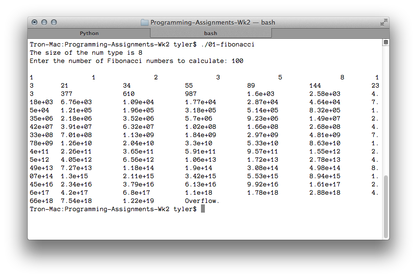

---

layout: default
title: 01-fibonacci

---

{% highlight c++ %}
// Tyler Mumford, 2014
// Compute the first N fibonacci numbers

#include <stdio.h>

typedef unsigned long long int num;

int main () {
	num input = 0, reached = 1;
	num current = 1, prev = 0, prevPrev = 0;

	printf("The size of the num type is %d\n", sizeof(num));

	printf("Enter the number of Fibonacci numbers to calculate: ");
	scanf("%d", &input);
	printf("\n");

	while (reached <= input) {
		if (current < prev) { printf("Overflow.\n"); break; }
		printf("%-8.3g\t", (double)current);
		prevPrev = prev;
		prev = current;
		current = prev + prevPrev;
		reached++;
	}
	
	return 0;
}

{% endhighlight %}


